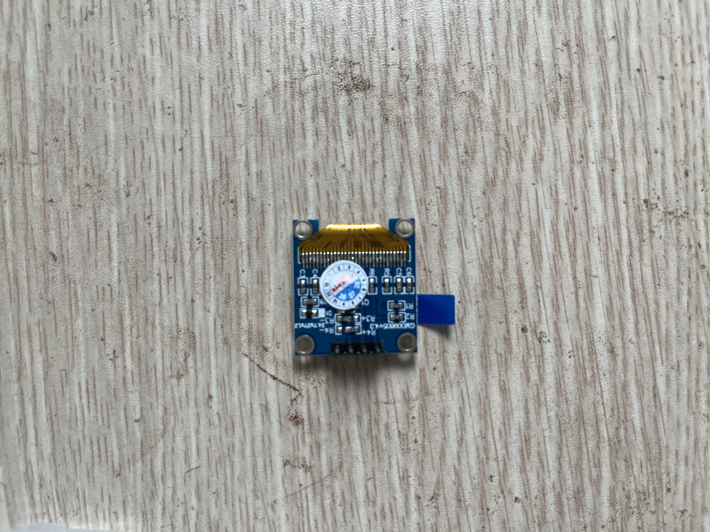
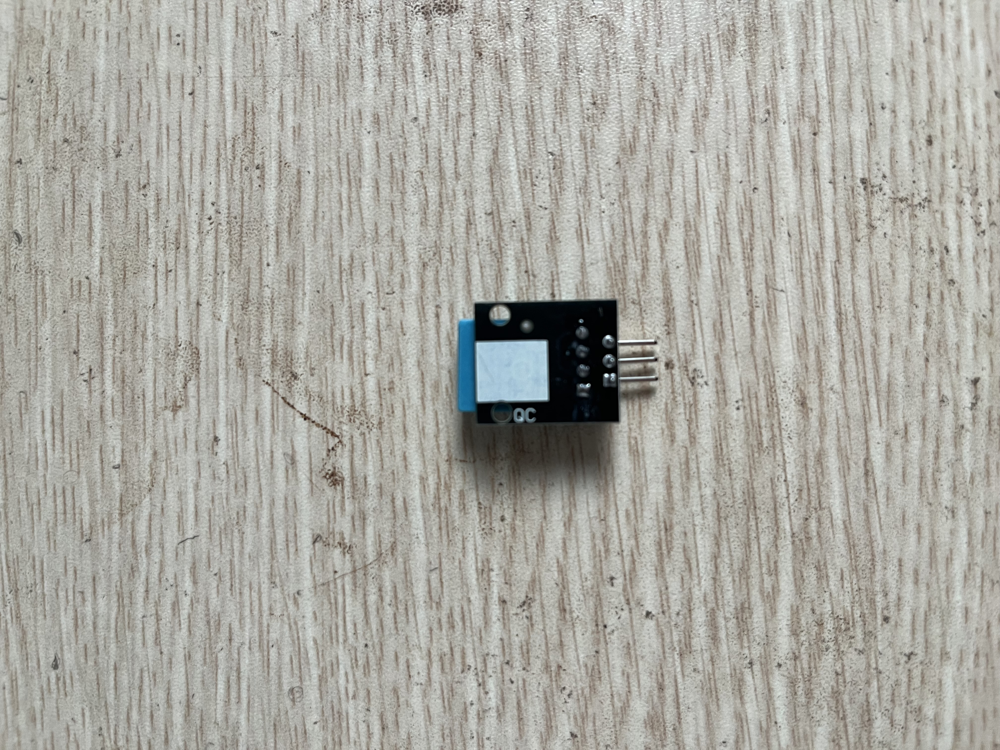

P9 OLED + sensor
Hiển thị nhiệt độ/độ ẩm DHT11 hoặc giá trị ánh sáng LDR lên OLED 0.96 inch qua I2C.
An toàn
Kiểm tra VCC của module OLED và sensor. Với ESP32, tín hiệu I2C/Sensor nên ở mức 3.3V.
Ảnh linh kiện





Nối dây gợi ý
| Module | ESP32 | Vai trò |
|---|---|---|
| OLED VCC/GND | 3V3/GND | Nguồn màn hình. |
| OLED SDA | GPIO 21 | Dữ liệu I2C. |
| OLED SCL | GPIO 22 | Clock I2C. |
| DHT11 DATA | GPIO 4 | Dữ liệu sensor. |
Các bước làm
- Chạy ví dụ scan I2C hoặc init OLED trước.
- Hiển thị dòng text cố định.
- Đọc DHT11 hoặc LDR và đưa giá trị lên màn hình.
- Cập nhật mỗi 1-2 giây để tránh nhấp nháy quá nhanh.
Hoàn thành khi
- OLED hiển thị ít nhất một giá trị sensor thay đổi.
- Bạn biết SDA/SCL là bus chung, khác với một chân digital đơn lẻ.